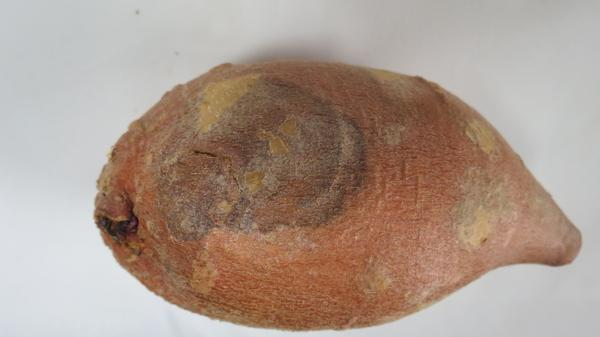
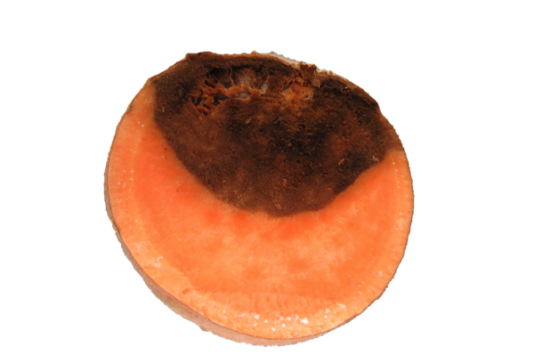

Pathogen
Fusarium root rot is caused primarily by the ascomycete fungus Fusarium solani.
Host Crops and Plants
Fusarium solani has a very broad host range, causing primarily root rots, stem cankers, and damping off in plant species across 66 families. The F. solani species is further broken up into various subspecies that cause disease on specific host plants. F. solani f. sp. batatas is considered the casual agent of Fusarium root rot, but the host specificity of this forma specialis is not well known.
Identification
Root rot of sweetpotato generally appears as circular lesions with light and dark brown concentric rings (Figure 1). Unlike surface rot of sweetpotato, root rot extends past the periderm and into the central parenchyma of the root often forming open cavities in the tissue (Figure 2). Infected tissue turns dark brown with the advancing margins appearing light brown. Root rot may also be initiated at the proximal or distal end of the sweetpotato, giving the name of the disease “end rot.” Enlarged lesions become dry and sunken and white mycelia may be visible on the outside of the lesion or in the inner cavities.

Figure 1. Circular lesion with concentric rings typical of Fusarium root rot.
Andrew Scruggs and Dr. Lina Quesada, NC State Vegetable Pathology Lab

Figure 2. Cross-section of Fusarium root rot, displaying typical symptoms of dry, open cavities. White mycelia of F. solani can be seen growing inside the cavities.
Andrew Scruggs and Dr. Lina Quesada, NC State Vegetable Pathology Lab
Favorable Environmental Conditions
Fusarium root rot occurs where roots have been injured during harvest or postharvest handling. Harvest conditions that increase injury to roots, thus potentially increasing the incidence of Fusarium root rot include:
- harvesting when the soil is cool and damp
- harvesting when the soil is overly dry
- exposing roots to extreme temperatures before curing
Once Fusarium root rot has been established, it will continue to progress throughout storage. While Fusarium root rot can progress over a wide temperature range (55-95°F), temperatures ranging from 73-84°F result in the most decay. Furthermore, high relative humidities (> 90%) also increase progression of this disease and results in higher losses. Having high initial inoculum levels in the field and on harvest and packing equipment also results in higher disease levels.
Disease Transmission
F. solani is present in soil around the world. It is a common soil inhabitant, and can survive in the absence of a host plant for up to five years as chlamydospores. Therefore, wounds occurred during harvest are subject to infection by populations of F. solani in the soil. F. solani may also survive on contaminated harvesting and packing equipment, allowing for subsequent infections after packing. Recent studies have also shown that F. solani can be transmitted from infected slips to sweetpotato roots. Upon injury and adequate environmental conditions, Fusarium root rot may develop on these roots.
General Disease Management
Prevention is the best method of controlling Fusarium root rot and several steps can be taken to limit black rot outbreaks:
- Only bed disease free roots for transplant production
- Cut slips a minimum of 2 cm above the soil surface to limit pathogen entry into wounds
- Implement a 5 year crop rotation
- Avoid planting in fields known to be infested with F. solani
- Reduce wounding during harvest and postharvest handling
- Maintain sanitary harvesting equipment, crates, water tanks, and packing lines
- Immediate and proper curing after harvest
Disease Control for Conventional Growers
The following are fungicides labeled for control of Fusarium root rot in seed beds. There are currently no labeled fungicides for postharvest application for control of this disease. For the latest fungicide recommendations for Fusarium root rot of sweetpotato see the Southeastern US Vegetable Crop Handbook. Fungicide labels are legal documents, always read and follow fungicide labels.
| Active Ingredient | Example Product | Fungicide Group |
|---|---|---|
| azoxystrobin | Dynasty 0.83F | 11 |
| fludioxonil | Maxim 4 FS | 12 |
Disease Control for Organic Growers
Avoiding wounding during harvest, proper curing, and good sanitation practices are best for controlling this disease. OMRI listed products for control of Fusarium root rot in seed beds are listed below. The efficacy of these products is unknown. For the latest recommendations for Fusarium root rot of sweetpotato see the Southeastern US Vegetable Crop Handbook.
| Active Ingredient | Example Product | Application Rate |
|---|---|---|
| hydrogen dioxide + peroxyacetic acid | Oxidate 2.0 | 32 fl oz/100 gal. (30-100 gal. per acre) |
| Reynoutria sachalinensis | Regalia | 1 to 4 qts per acre |
| Streptomyces lydicus WYEC 108 | Actinovate AG | 3-12 oz. per acre |
Useful Resources
- The NC State University Plant Disease and Insect Clinic provides diagnostics and control recommendations
- The Extension Plant Pathology Portal provides information on crop disease management
- The Southeastern US Vegetable Crop Handbook provides information on vegetable disease management
- The USDA Fungus-Host Distributions Database provides information about reported hosts for fungal pathogens
Acknowledgements
This factsheet was prepared by the NC State University Vegetable Pathology Lab in 2015.
Publication date: May 6, 2018
Reviewed/Revised: Jan. 9, 2023
N.C. Cooperative Extension prohibits discrimination and harassment regardless of age, color, disability, family and marital status, gender identity, national origin, political beliefs, race, religion, sex (including pregnancy), sexual orientation and veteran status.
![QR code linking to this publication page]()